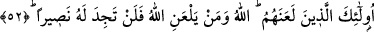
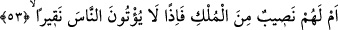
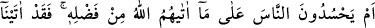
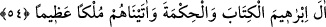

Ebû Süfyan, Ka’b’a: “Sen kitabı okuyan ve bilen bir adamsın. Biz ise bilmeyen
ümmîleriz. Hangimiz doğru yolda? Biz mi?” Muhammed mi? deyince Ka’b:
“Muhammed ne diyor?” diye sordu. Ebû Süfyan: “Sâdece Allah’a ibâdet etmeyi
emrediyor ve O’na ortak koşmayı yasaklıyor.” dedi. Ka’b bu sefer: “Peki sizin dininiz
nedir?” diye sorunca Ebû Süfyan: “Biz Beytullah’ın koruyucularıyız. Hacılara su verir,
misafirleri ağırlar, esirleri kurtarırız.” dedi ve yaptıkları diğer şeyleri sıraladı. Ka’b da
onlara: “Siz daha doğru yoldasınız.” dedi. İşte onun için Allah Teâlâ şöyle buyurdu:
“Sonra da kâfirler için: “Bunlar yani, inkar edenler îman edenlerden daha doğru
yoldadır” din ve gidişât bakımından daha doğrudurlar “diyorlar.”
52- Bunlar, Allah’ın lânetlediği kimselerdir; Allah’ın rahmetinden uzaklaştırdığı
(lânetli) kimseye gerçek bir yardımcı bulamazsın.
“Bunlar”, yukarıdaki sözü söyleyenler, “Allah’ın lânetlediği kimselerdir”,
rahmetinden kovup uzaklaştırdığı insanlardır. “Allah’ın lanetlediği”, rahmetinden
uzaklaştırdığı “kimseye”, ondan dünyevî veyâ uhrevî azâbı ne şefâat ile veyâ başka bir
yolla defedecek “gerçek bir yardımcı bulamazsın.” Bu ifade yahûdîlerin, Kureyş’ten
talep ettiklerinden mahrum kalacaklarını açıkça göstermektedir.
53- Yoksa onların mülkten bir nasipleri mi var? Öyle olsaydı insanlara çekirdek
zerresi bile vermezlerdi.
“Yoksa onların mülkten bir nasipleri mi var?” ifâdesi yahûdîlerin dünyâ mülkünün
eninde sonunda kendilerinin olacağı iddiâlarını inkardır. “Öyle olsaydı insanlara bir
çekirdek zerresi bile vermezlerdi.” “Nakîr” kelimesi çekirdeğin yüzeyindeki oyuktur.
Azlık ve değersizliği anlatmak için misal getirilir.
İşte bu ifâde yahûdîlerin bütün hallerini ortaya çıkaran bir açıklamadır. Çünkü
hükümranlık ellerinde olmasına rağmen bir çekirdek zerresinde cimrilik ettiklerine göre
zelîl ellerinde bir şey olmadığında nasıl davranırlar dersin?”